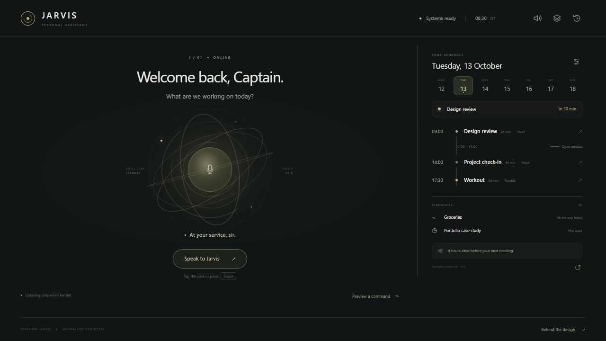
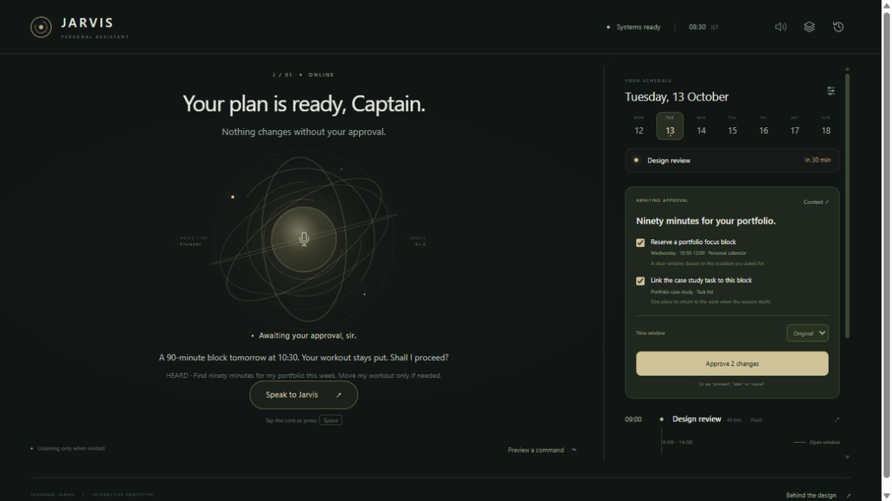
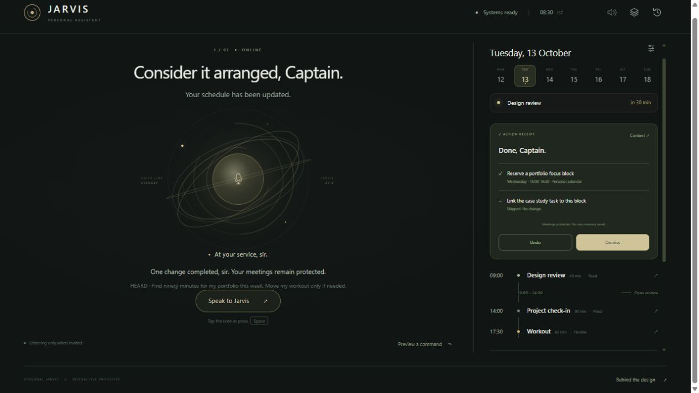
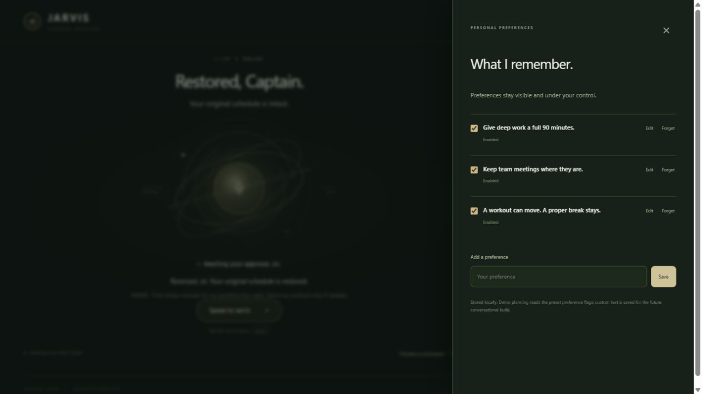

A voice core with a purpose
A central orbital core is the primary interaction target. Listening, checking, speaking, and awaiting approval have distinct states. Short captions preserve meaning without turning the screen into a message history.
Personal Jarvis is a voice-controlled personal assistant. A spoken request drives the interaction; a compact schedule makes its consequences visible.
↗
01 / THE VOICE PRESENCEProduct design
Interaction prototyping
How can voice feel personal
while keeping actions clear?
Functional browser prototype
Visual design system
AI-assisted exploration
Usability testing next
Daily planning lives across events, tasks, and habits. A voice assistant can capture a request quickly. The harder design problem is making its interpretation and intended actions visible enough to steer.
“Find me ninety minutes to finish my portfolio. Move my workout only if you have to, and tell me what will change.”
This request holds an objective, a preference, and a boundary. A useful response needs to reconcile all three. The interface must show the assumptions that shape the plan and preserve a clear route back when the user changes their mind.
The prototype focuses on a person planning their week while moving between activities. Voice drives requests and short replies; the visual schedule supports review. These are assumptions to validate with people, rather than research findings.
The first version placed a conversation beside a plan canvas. Feedback was clear: it felt like an LLM interface. The direction shifted toward an assistant you address by voice.
The revision removes the text composer, suggestion cards, conversation bubbles, and persistent reply history. The voice core becomes the main control, with a single response caption for clarity.
The schedule now sits at the edge of attention. Short greetings establish the persona; alerts, reminders, and concise insights provide useful awareness. Memory and activity move into secondary panels.
The loop stays small enough to understand and complete in a single sitting.
Capture a spoken request, including a constraint.
Show the calendar, tasks, and preferences being used.
Preview each change and adjust the plan.
Select which proposed actions can happen.
Read the receipt and undo the complete plan.
A central orbital core is the primary interaction target. Listening, checking, speaking, and awaiting approval have distinct states. Short captions preserve meaning without turning the screen into a message history.
The assistant remains the focus. A narrow schedule supplies the next alert, reminders, and one-line insights. Proposed changes appear only when needed; the user can approve by voice or inspect and select actions visually.
“Welcome back, Captain.” and “At your service, sir.” establish a consistent assistant persona. Preferences remain inspectable, pausable, editable, and removable in a secondary panel.
A brief spoken confirmation is paired with a visual receipt of completed and skipped actions. Undo restores the sample workspace; the activity record remains available on demand.
A plan is a reviewable object. The interface keeps the evidence, alternatives, and action boundary close to the decision.

The context panel names the sources. Per-action reasons explain the recommendation. Approval is a deliberate moment before the demo schedule changes.

Completion makes consequences and recovery visible.

Personal context stays understandable and controllable.
The inspiration from Iron Man's Jarvis is its awareness, precision, and continuity. The interface expresses those qualities through warm signal light, restrained orbital motion, and layered surfaces.
The visual system uses a compact sans serif hierarchy, generous space around decisions, and quiet borders. Amber marks the assistant's attention. Sage communicates a completed action.
Animation provides a sense of presence without carrying essential information. Keyboard focus, descriptive controls, text transcripts, and reduced-motion support are part of the implementation.
The next study would use five participants and three planning scenarios. No participant results are claimed in this exploration.
This is a proposed validation plan. The sample-command flow has been checked in a desktop browser. Mobile and live microphone testing are next.
Voice input with automatic submission at the end of an utterance; spoken approval, correction, cancellation, and undo; three sample planning scenarios; schedule alerts, reminders, time adjustments, receipts, memory controls, and local persistence.
The interface uses sample events and deterministic planning logic. Calendar and task connections are simulated. Speech support depends on the visitor's browser; a secondary command preview demonstrates the flow without microphone access.
Actual calendar and task connectors, a conversational model, streaming audio, reliable interruption handling, and partial-failure recovery. A production assistant would need to reconcile permissions and state across these services.
This exploration was developed with AI assistance in design and implementation. The product direction is rooted in my interest in personal assistants and in combining design with engineering.